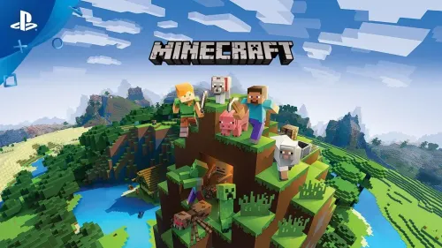

Minecraft, desarrollado por Mojang Studios, es el videojuego más vendido de todos los tiempos y un fenómeno cultural definitivo. Basado en un vasto mundo abierto generado de forma procedimental y compuesto enteramente por bloques tridimensionales, el juego invita a los jugadores a explorar, recolectar recursos, fabricar herramientas y construir desde sencillos refugios hasta complejas obras arquitectónicas o sistemas mecatrónicos con Redstone. Su propuesta da libertad absoluta al usuario, permitiéndole definir sus propios objetivos sin estructuras ni caminos predeterminados.

El juego ofrece dos modos principales que se adaptan a distintas formas de jugar: el modo Supervivencia, donde los jugadores deben gestionar su salud y hambre mientras se defienden de criaturas nocturnas como creepers y esqueletos, y el modo Creativo, que brinda acceso ilimitado a todos los recursos e invulnerabilidad para dar rienda suelta a la imaginación. Con una activa comunidad global, un ecosistema masivo de mods, contenido multijugador e interconectividad entre plataformas (Cross-play), Minecraft se mantiene como una plataforma inagotable de creatividad, exploración y entretenimiento para todas las edades.